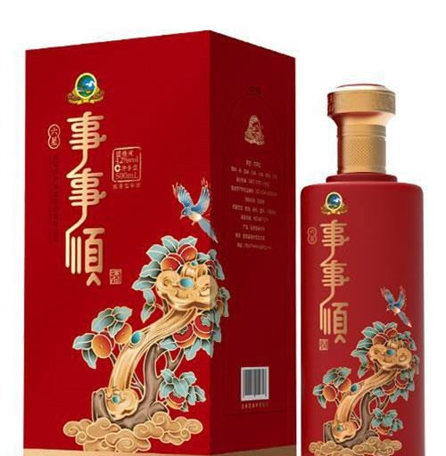
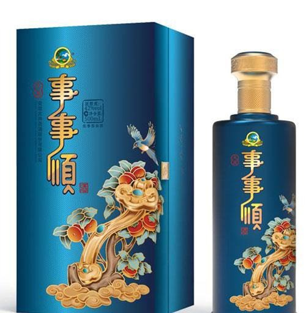
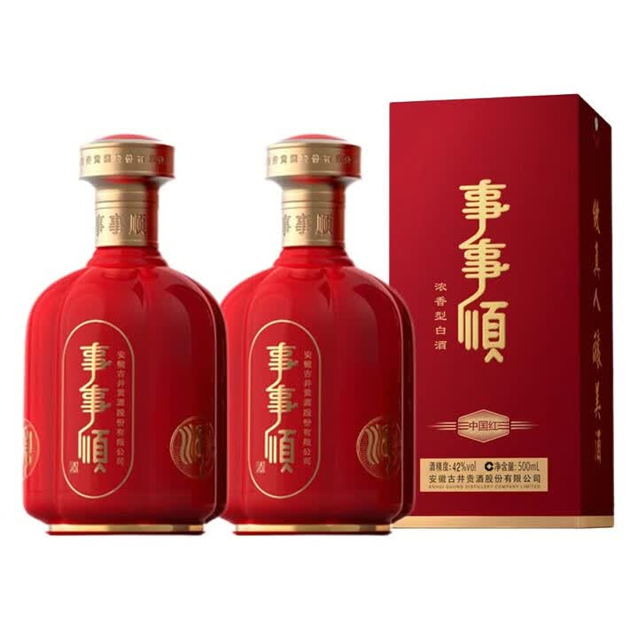
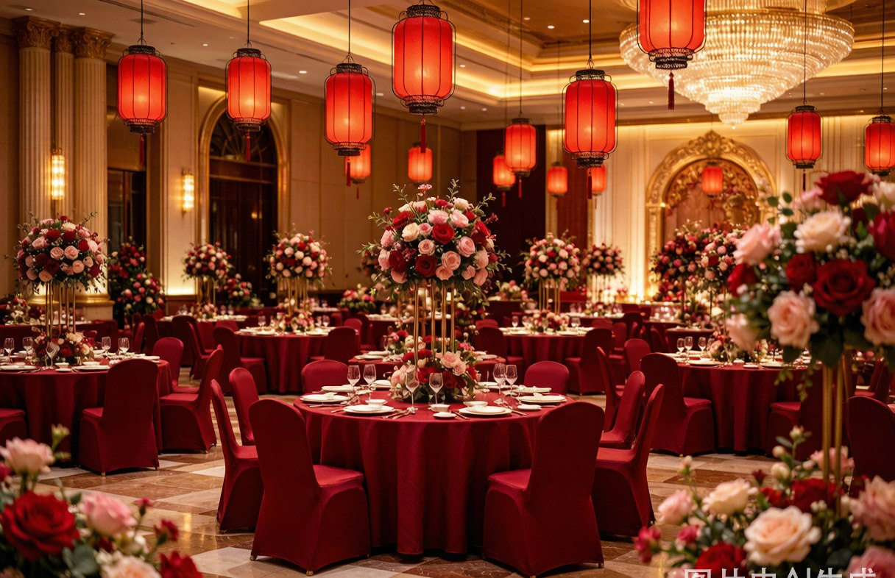
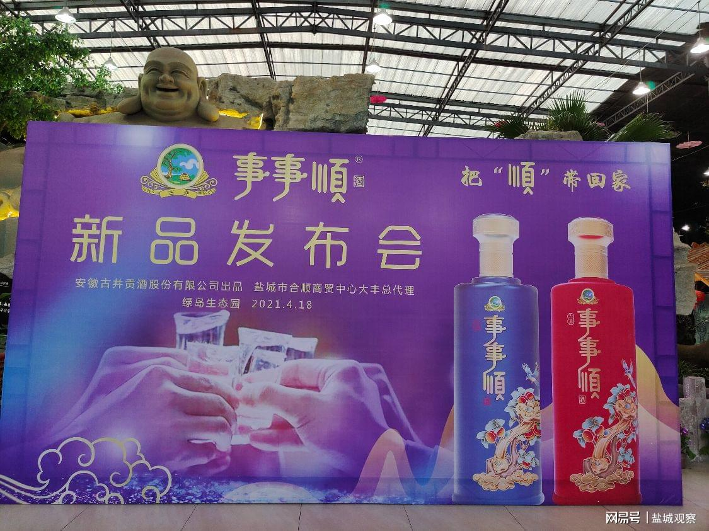
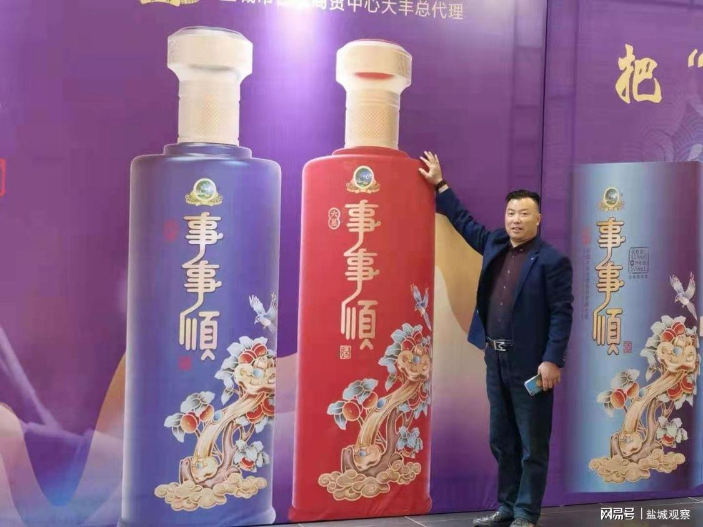
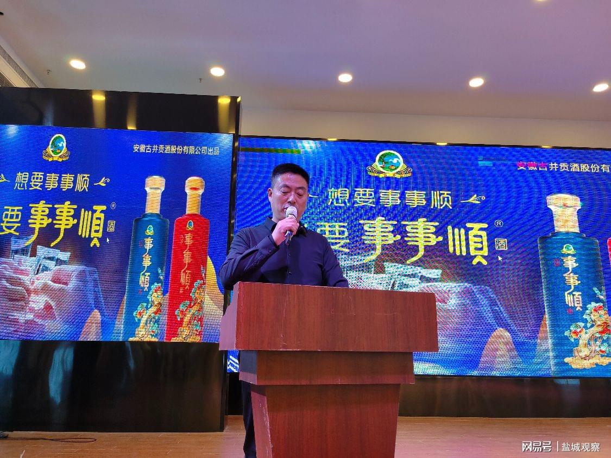

中国红事事顺 · 六星
浓香型 · 42%vol · 500ml
中国红瓶身，玻璃喷涂工艺，代表喜庆与祥和。外盒典雅大方，纯手工制作。婚宴喜宴、佳节礼赠之选。
古井贡酒 · 年份原浆之源
九酝春酒进献汉献帝
贡酒之源
《九酝酒法》世界现存最古老
蒸馏酒酿造方法
古井贡酒酿造技艺
国家级非物质文化遗产
终端体验店遍布皖苏浙
迈向全国
BRAND STORY
东汉建安三年，曹操将家乡亳州所酿「九酝春酒」进献汉献帝，赞为「佳酿」——这是古井贡酒之源，也是事事顺酒的根脉。两千年后，一位名叫王亚洲的亳州青年，以四万元押注「事事顺」商标，依托古井贡酒的优质基酒，把中国人最朴素的心愿——「事事顺」，酿进了一杯浓香里。
曹操献酒汉献帝，「色清如水晶，香纯似幽兰」，亳州酿酒自此名扬天下。
王亚洲创立事事顺酒业销售公司，与古井贡酒深度合作，获得优质基酒供应，专注吉祥文化细分市场。
升学宴定制酒上市，单月销量突破百万，场景化定制成为品牌名片。
4月18日，事事顺酒新品品鉴及上市发布会在盐城举行，三百嘉宾共品古井醇香。
联合六省九家酒企打造文化IP矩阵，以文化赋能白酒，年产值突破八千万元。
「我们卖的不是酒精饮料，
—— 事事顺品牌创始人 王亚洲
而是情感寄托和文化认同。」

事事顺图腾
柿子 × 如意 × 喜鹊CULTURE
事事顺图案，是柿子与如意的结合，寓意事事如意；
喜鹊报喜，象征家顺、国顺、事事顺。
我们把这份祝福，分赠给人生的三场大考。
十年寒窗，一朝题名。「金榜题名」升学宴定制酒，单月销量破百万，见证万千学子的圆梦时刻。
商海纵横，贵人同行。商会宴请、事业庆功，一杯事事顺，敬通往成功路上满怀感恩的人。
阖家团圆，福寿绵长。婚寿宴席、佳节团圆，「吾家有喜，就喝事事顺」。
PRODUCTS
浓香型白酒 · 五粮精酿 · 安徽古井贡酒股份有限公司出品

中国红浓香型 · 42%vol · 500ml
中国红瓶身，玻璃喷涂工艺，代表喜庆与祥和。外盒典雅大方，纯手工制作。婚宴喜宴、佳节礼赠之选。

宝石蓝浓香型 · 42%vol · 500ml
宝石蓝瓶身，代表冷静与智慧。格调更臻，商务宴请、感恩答谢的品位之选。

电商臻选浓香型 · 42%vol · 500ml
红瓶金盖，瓶颈环印「事事顺」，配典雅礼盒。电商渠道臻选款，送礼自饮两相宜。
CRAFTSMANSHIP
千年古法，五粮精华，一杯浓香的来处

精选优质高粱、大米、小麦、糯米、玉米，五粮黄金配比，各味谐调，层次丰盈。

传承传统「老五甑」酿造工艺，源自古井《九酝酒法》，经国内顶级白酒大师精心调制。

汲取亳州古井优质地下泉水，水质甘洌，千年水脉孕育「香纯似幽兰」的浓香风骨。
OCCASIONS

「吾家有喜，就喝事事顺」——幸福时刻，有我相伴，你们一生的幸福我们见证。
好礼表心意，酒到情谊到。走亲访友，事事顺当然不能少。
通往成功的道路上，总有几个人值得我们满怀感恩。
亲友是我们最重要的财富，欢聚时刻，当然要畅饮。
NEWS

古井事事顺酒大丰新品品鉴及上市发布会在绿岛生态园举行，三百余位嘉宾共品古井的醇厚与芳香，「把顺带回家」。

事事顺红瓶、蓝瓶巨型模型惊艳亮相，安徽古井集团与盐城市合顺商贸中心携手，共拓区域市场。

据腾讯新闻报道，事事顺在亳州「家喻户晓」——从商贩推车到大小酒楼，「国人谁不期盼事事顺」。
PARTNERSHIP
古井贡酒品牌背书 · 全渠道运营支持 · 诚邀全国经销商共赢
合作洽谈请通过正规渠道联系品牌方，谨防假冒。